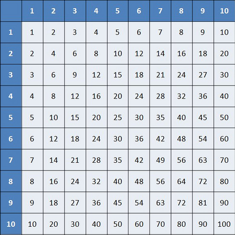

1.1 Multiplikasjon
Multiplikasjon er en forkortelse for repeterte addisjoner. Multiplikasjons tegne er "*" eller "X". Når vi multipliserer kan vi tenke oss at vi plusser x y antall ganger. Det tallet vi får, kaller vi et produkt.
Eksempel 1:
Arvin besøker 3 jenter 2 dager på rad, hvor mange har han besøkt totalt.
2 * 3
2 + 2 + 2 = 6
Gangetabell
Denne kan komme til nytte.
Øve-Oppgave:
-
Gjør multiplikasjonene.
a) 4 * 3 b) 6 * 8 c) 3 * 9
-
Rolf drikker 4 glass vann om dagen. Hvor mange glass vann har han drukket i løpet av en uke?
Fasit:
Oppgave 1:
Oppgave 2:
1.2 Division
Division er på en måtte det motsatte av multiplikasjon, akkurat som addisjon er det motsatte av subtraksjon.
Divisjon bruker "/" eller ":" som tegnet. Når vi dividerer tenker vi oss at vi sjekker hvor mange ganger vi kan trekke et tall fra et annent. Da får vi en kvotient.
Eksempel 2:
Thevisha får 2kr fra kjæresten sin Arvin, hver dag, til han ikke har mer. Arvin starter med å ha 8kr. Hvor mange dager får Thevisha penger fra Arvin?
8 / 2
8 - 2 - 2 - 2 - 2 = 0
Vi kan trekke 2 4 ganger fra 8. Derfor:
8 / 2 = 4
Rest
Om vi ikke kan dele på et tall fult, som 9 / 2.
9 - 2 - 2 - 2 - 2 -2 = -1
Må vi ta det nærmeste tallet null. Dette tallet kaller vi rest. Da får vi svaret
9 / 2 = 4 og 1 i rest.
Øve-Oppgave:
-
Regn ut:
a) 60 / 6 b) 45 / 5 c) 72/9
Fasit:
Oppgave 1:
1.3 Brøk
En brøk er en måtte å representer division på. Vi har tre hoved deler av en brøk. Teller, nevner og brøkstrek. Teller er tallet øverst i en brøk, mens nevner er tallet nederst. Brøkstreken er der kun for å skille mellom de to tallene.

Vi kan tenke oss at brøken betyr Teller delt på Nevner.
Vi har også uekte og ekte brøk
En ekte brøk er når teller er mindre eller samme som nevner
Uekte brøk får vi når teller er større enn nevner. F.eks:
Eksempel 3:
Dette er en uekte brøk.
9
6
Øve-Oppaver:
-
Gjør om til brøk:
a) 8 / 2 b) 4/9 c) 3/2 d) 1/16
-
Hvilke brøker fra 1.3.1 er uekte, og hvilke er ekte?
Fasit:
Oppgave 1
Oppgave 2
1.4 Tekstoppgaver
I løpet av dette kapitlet har jeg gitt tekstoppgaver i eksemplene. En tekstoppgave består av nyttig info, og masse unyttig info. Denne unyttige infoen er for at den skal være knyttet til et praktisk eksempel.
Når vi leser av en tekstoppgave er det viktig å lette etter den nyttige infoen. Infoen du er ute etter er tallene, og hva oppgaven er ute etter.
Tall er ganske lette å finne, men de kan også skjule seg bak ord, som for eksempel en uke = 7 dager eller at det er 365 dager i en uke.
Oftest sier oppgaven din ganske tydlig hva du skal, men akkurat som med tall kan det skjule seg litt. Ta eksempel 1 dette spurte ikke direkte om at du skulle gange. Men vi skjønte det ut ifra at vi skulle finne et produkt av de to tallene.
Øve-Oppgaver:
Athi og Rahmad er ute på Peppes Pizza. Der bestiler de en pizza delt i 8 stykker. Rahmad er sulten og spiser 5 pizza stykker. Hvor stor brøkandel får Athi?
-
Ninthuya liker å shoppe online. Hun kjøper en kjole til 300kr og et par øredobber til 100kr. Hun har 578kr på kortet. Hvor mye har hun igjen etter handelen?